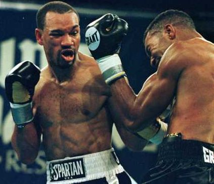

|
MAIN EVENTS CLEARED IN STEPHAN JOHNSON'S 'WRONGFUL DEATH' LAWSUIT By Elisa Harrison |

The Honorable Carol Higbee, Superior Court Judge of Atlantic County, New Jersey, has ruled that New Jersey Sports Productions, Inc (d.b.a. Main Events) and Main Events Vice-President of Boxing Operations Carl Moretti did not act negligently with respect to Stephan Johnson and his death, it was announced today by Main Events CEO Kathy Duva.
Johnson’s family had filed a “wrongful death” suit against a number of parties, including Main Events. Among the parties who were not granted summary judgment and who must stand trial are the South Carolina Athletic Commission and various doctors who examined Johnson prior to the bout.
Johnson, a Brooklyn native, died from injuries suffered in a November 20, 1999 bout against former world champion Paul Vaden. Although he was already on medical suspension in Canada, Johnson was licensed in South Carolina, Georgia and New Jersey.
Johnson's mother Ira had this to say after her son's death: ''Stephan had a passion for boxing. He really loved boxing from the time he was a little kid, 5 years old -- loved it with all his heart. Whenever I talked to him about stopping, he said, 'Stop asking me to quit. I've never been in jail. I've never done drugs. Let me pursue my passion.'''
Johnson's professional career spanned over twelve years, his record stands at 27-9-1, 18 KOs. In his 12th professional fight Johnson battled a young Roy Jones, Jr. who was then making his second appearance in the pro ranks. After winning the IBU Light Middleweight title via TKO5 over Sam Garr in September of 1998, Johnson faced Fitz Vanderpool for the WBF Light Middleweight title in Toronto, Ontario, Canada, on April 14, 1999. Johnson was knocked unconscious by Vanderpool, taken from the ring on a stretcher and subsequently placed on a medical suspension in Canada.
Stephan fought twice after the incident in Canada. Only four months later, in South Carolina, where he earned a ten-rounder decision win against Otilio Villareal. Two months after the Villareal victory Johnson met Calvin Moody in Albany, Georgia, winning by way of TKO3.
Six weeks later, and in what would be his last fight ever, Johnson faced Paul Vaden for the vacant USBA Light Middleweight title, for a reported $100,000 purse. Reported brain injuries caused his death on December 5, 1999, two weeks after the Vaden match, at the age of 31.
Coming into
this bout, Vaden's only losses had been to Keith Holmes and Terry Norris.
Subsequently to Johnson's death Vaden faced and lost to Shibata Flores in
Las Vegas, Nevada. Paul Vaden
announced his retirement after the Flores bout, and as of this date has remained
retired.
7-10-2004
Brought to you by Saratogamist
copyright 2001-2004